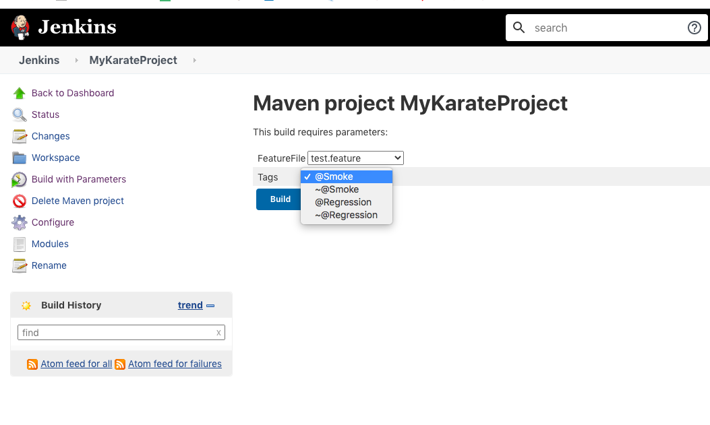

We should have below prerequisite:
#Java / JDK installed in system.
#Maven Installed in Machine
#Jenkins Installed in Machine
#My project in GIT repository
Do below Jenkins Configuration for Java JDK and Maven path. Go to Jenkins Configuration and set these
two paths as below.


Create a Maven Jenkins project for karate as below.
Click on 'This project is parameterized check box' ,Set feafure files and Tags as choice
parameter.
Now to upload you project into public GIT , you need to -
#Create a new account into GIT
#Create a project repository for karate in GIT
#Upload your local code with below command --
===============================
echo "# SeleniumCucumber" >> README.md
git init
git add README.md
git commit -m "first commit"
git remote add origin https://github.com/YouruserID/YourProjectName.git
git push -u origin master
==========================================
Set to your GIT url as below with GIT credentials.
Go to Pre Build --> execute cell and write below command
# Note here '$FeatureFiles' is parameterized where FeatureFile is
Chioce parameter feature file name.
How to run it from Jenkins?Below Jenkins run will execute only 'test.feature' file.
How to pass both 'feature file' and 'TAG' as parameter?
# Note here '$FeatureFiles' & '$TAGs' are parameterized where FeatureFile is
Chioce parameter feature file name and '$TAG' is tag name from Chioce parameter.
How to run it from Jenkins?Below Jenkins run will execute only 'test.feature' file
having @Smoke tags.

Jenkins Test Report will be like below:
By Default the Jenkins parameterized section would be look like below: